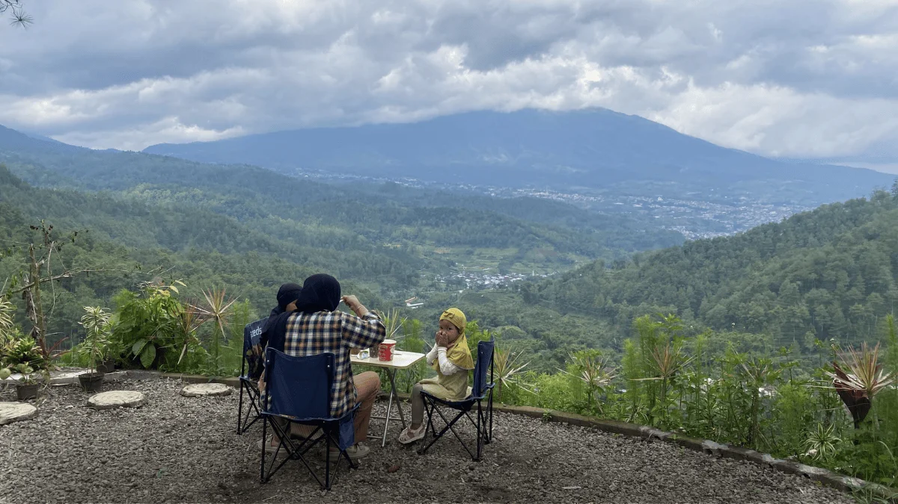

Corporate Gathering
Membangun Kekompakan Tim Sambil Nikmati Keindahan City Light dari Camping Ground Batu Malang
Mengadakan agenda luar ruang untuk perusahaan sering kali menjadi tantangan tersendiri bagi tim HRD atau panitia acara.
Baca Artikel